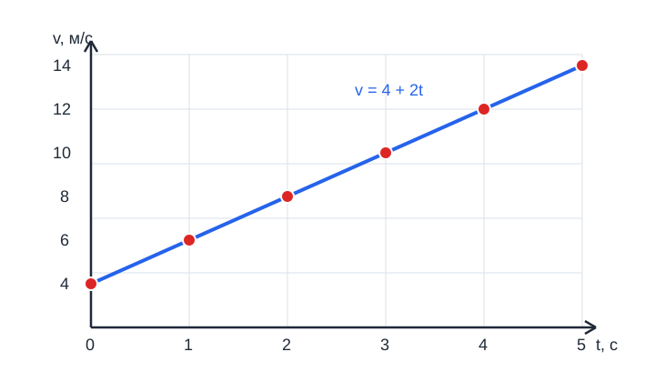

Равноускоренное прямолинейное движение
Главная мысль урока
Равноускоренное прямолинейное движение — движение по прямой с постоянным ускорением. За равные промежутки времени скорость изменяется на одну и ту же величину.
Ускорение
Ускорение показывает, как изменяется скорость за единицу времени:
Здесь \(v_0\) — начальная скорость, \(v\) — скорость через время \(t\). Единица ускорения в СИ — \(м/с^2\).
В задачах выбирают положительное направление оси и работают с проекциями величин:
Знак ускорения определяется выбранным направлением. Если скорость и ускорение направлены одинаково, модуль скорости увеличивается; если противоположно — уменьшается.
Скорость и координата
При постоянном ускорении скорость через время \(t\) равна:
Перемещение тела за это время определяется формулой:
Если движение описывается координатой, то:
При начале движения из состояния покоя \(v_0=0\), поэтому \(v=at\) и \(s=at^2/2\).
Средняя скорость
Средняя скорость при равноускоренном движении без изменения направления может быть найдена как:
Эта формула показывает, что при постоянном ускорении средняя скорость равна среднему арифметическому начальной и конечной скоростей.
Графики
График скорости \(v(t)\) при постоянном ускорении — прямая:
Её наклон показывает ускорение. График координаты \(x(t)\) — парабола, потому что координата содержит слагаемое \(at^2/2\). Площадь под графиком скорости за время движения равна перемещению, если используется согласованная ось и учитываются знаки.
Для примера \(v=4+2t\) график скорости выглядит так:

Прямая начинается при \(v_0=4\ м/с\) и за каждые \(1\ с\) поднимается на \(2\ м/с\). Поэтому её наклон равен ускорению \(a=2\ м/с^2\).
Разбор примеров
Пример 1. Скорость и путь
Тело начинает движение со скоростью \(4\ м/с\) и ускоряется с \(a=2\ м/с^2\) в течение \(5\ с\):
Пример 2. Торможение
Автомобиль двигался со скоростью \(20\ м/с\) и остановился за \(4\ с\):
Путь до остановки:
Пример 3. Нахождение времени
Тело начало движение из покоя с ускорением \(3\ м/с^2\). Когда его скорость станет \(12\ м/с\)?
Из \(v=at\) получаем:
Алгоритм решения задач
- Выбрать положительное направление.
- Записать известные \(v_0\), \(v\), \(a\), \(t\) и \(s\) с учётом знаков.
- Перевести величины в единицы СИ.
- Выбрать формулу, содержащую искомую величину.
- Подставить данные и проверить единицы и физический смысл ответа.
Главное
- При равноускоренном движении ускорение постоянно.
- Скорость изменяется по закону \(v=v_0+at\).
- Перемещение определяется формулой \(s=v_0t+at^2/2\).
- Средняя скорость равна \((v_0+v)/2\), если движение не меняет направление.
- Знаки проекций зависят от выбранного направления оси.
Вопросы и задания
- Что называют равноускоренным движением?
- Тело имело начальную скорость \(3\ м/с\) и ускорение \(4\ м/с^2\). Найдите скорость через \(2\ с\).
- Найдите путь тела из предыдущего задания за \(2\ с\).
- Поезд уменьшил скорость от \(25\ м/с\) до \(5\ м/с\) за \(10\ с\). Найдите ускорение.
- За какое время тело, начавшее движение из покоя с ускорением \(2\ м/с^2\), достигнет скорости \(18\ м/с\)?
- Чем отличаются графики \(v(t)\) и \(x(t)\) при равноускоренном движении?
Ответы для самопроверки
1. Движение по прямой с постоянным ускорением; за равные времена скорость изменяется одинаково.
-
\(v=3+4\cdot2=11\ м/с\).
-
\(s=3\cdot2+4\cdot2^2/2=14\ м\).
-
\(a=(5-25)/10=-2\ м/с^2\).
-
\(t=v/a=18/2=9\ с\).
-
\(v(t)\) — прямая, а \(x(t)\) — парабола, если ускорение ненулевое.